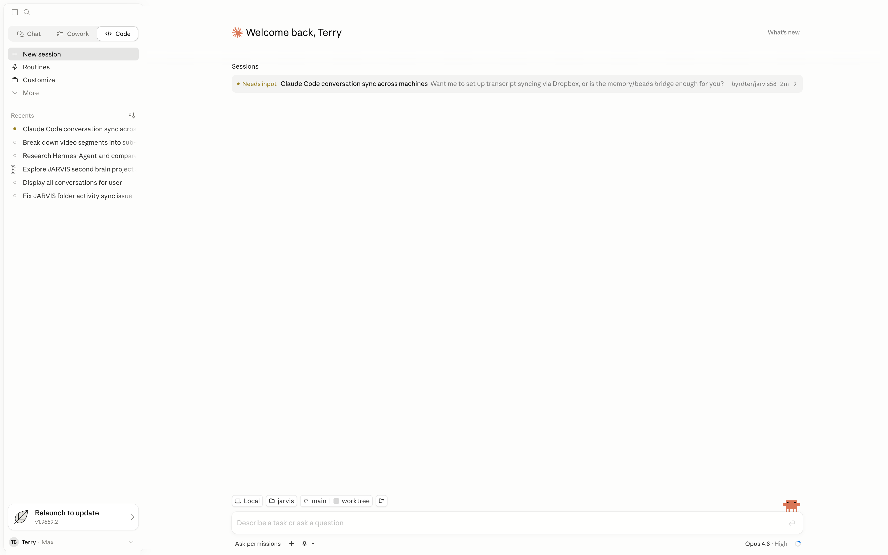

Cold open
2027 is not about better chat.
Chat is the front door. The real advantage is knowing the operating stack around the model.
- ChatGPT baseline public web-roll
- Claude Code + Codex agent workspaces
- GitHub PRs and Actions workflow proof
CHAT BASELINE
AGENT COCKPIT

PRODUCTION LOOP